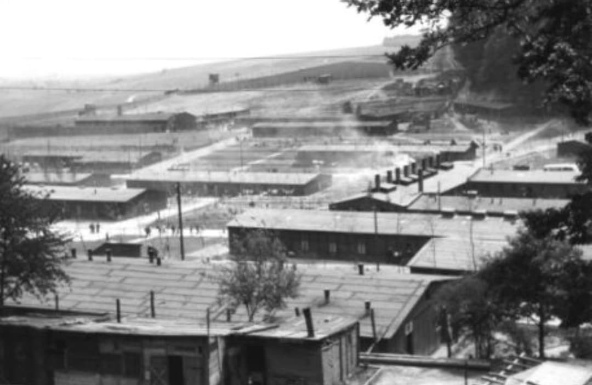
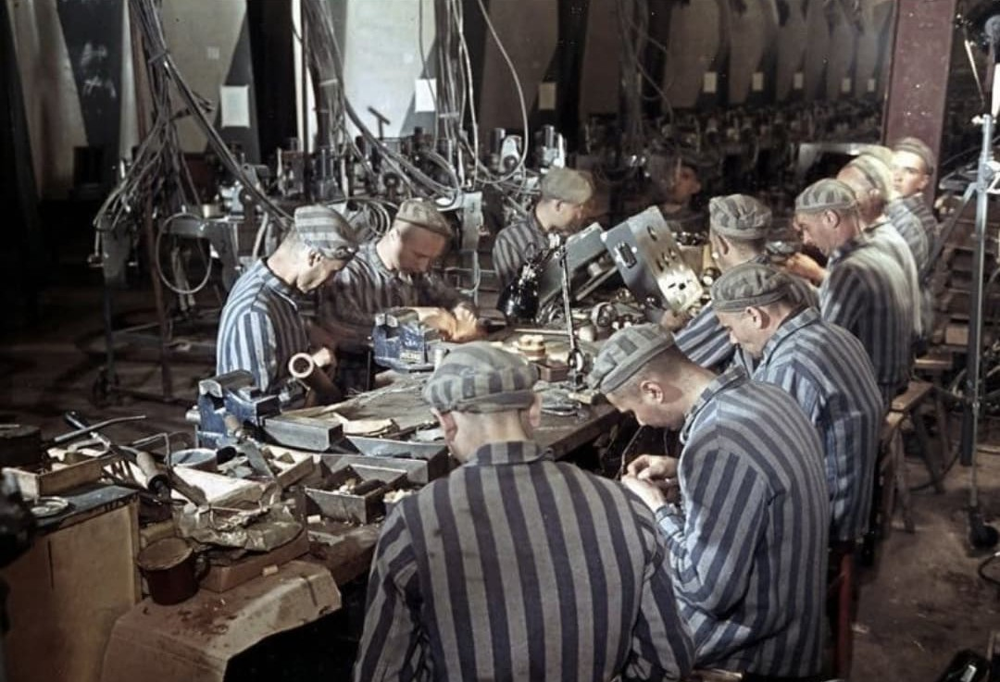
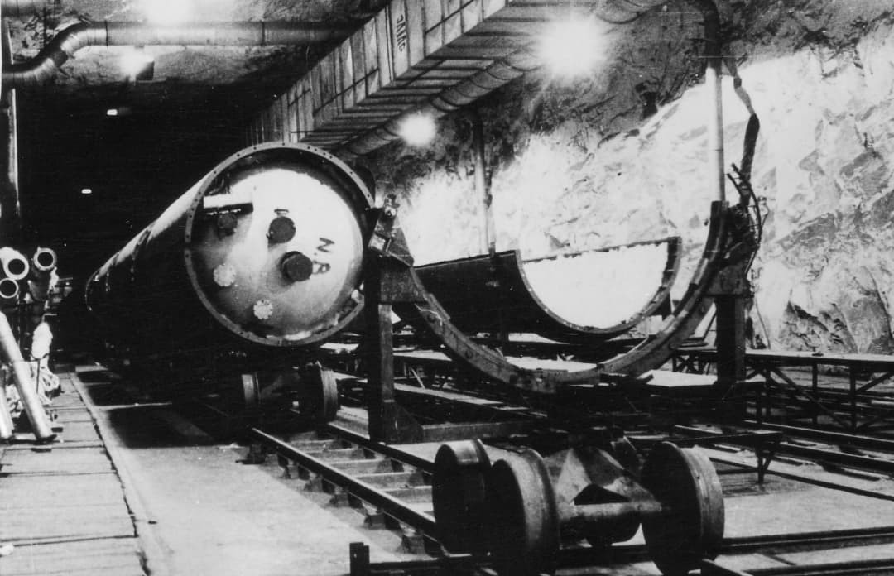
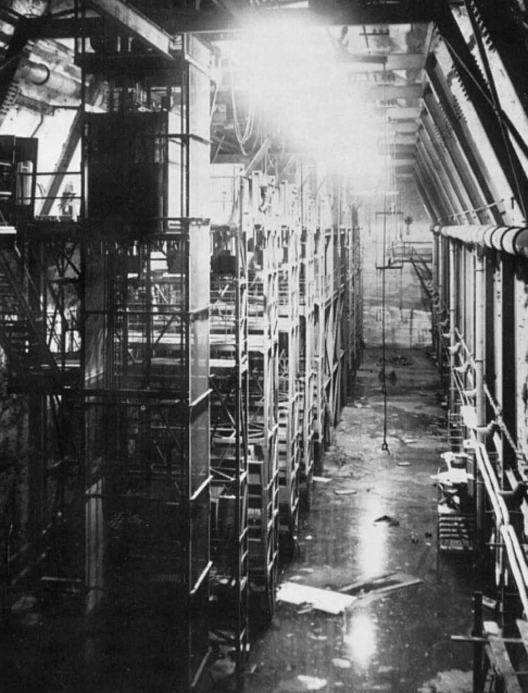
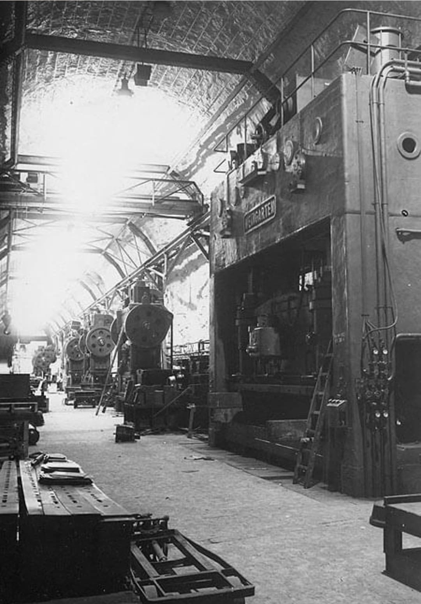

Cette photographie montre l’étendue du camp de Dora‑Mittelbau : des baraquements alignés, isolés dans la vallée, où les déportés vivaient dans des conditions extrêmes avant d’être envoyés dans les tunnels du Mittelwerk.
Dora‑Mittelbau, près de Nordhausen, est l’un des lieux les plus tragiques de la Seconde Guerre mondiale. Il combine un camp de concentration et une usine souterraine : le Mittelwerk, où étaient produits les fusées V2.
Des milliers de déportés y ont été forcés de travailler dans des tunnels sans lumière naturelle, saturés de poussière, de fumées et de bruit.
Les déportés travaillaient jusqu’à 18 heures par jour dans des tunnels humides, froids et mal ventilés. L’air était chargé de poussières métalliques, de gaz toxiques et de fumées de moteurs.
Les explosions, les effondrements et les accidents étaient fréquents. Les machines tournaient en continu, créant un vacarme assourdissant. Les déportés travaillaient souvent sans protection, pieds nus ou en sabots, dans la boue, l’huile et la poussière.
La mortalité était immense : plus de 20 000 déportés meurent à Dora, victimes de faim, d’épuisement, de maladies respiratoires, de mauvais traitements ou d’exécutions.
Le programme était supervisé par la SS, sous l’autorité de Heinrich Himmler, qui exigeait une production maximale malgré les pertes humaines.

Cette image montre des déportés travaillant sur des établis, dans un atelier saturé de machines. Les prisonniers, épuisés, effectuaient des tâches de précision sous surveillance constante.
Le terme Mittelbau signifie « construction centrale ». Il désigne l’ensemble des installations souterraines et des camps créés autour de l’usine du Mittelwerk, destinée à la production des fusées V2.
À l’origine, Dora était un sous-camp de Buchenwald. Mais l’ampleur du programme V2, la multiplication des tunnels, des ateliers et des camps annexes ont conduit la SS à créer un complexe autonome : le Mittelbau.
Ce complexe regroupait :
– le camp principal de Dora,
– plus de 30 camps satellites,
– l’usine souterraine du Mittelwerk,
– les zones de stockage et de montage final.
Le nom « Mittelbau » reflète la volonté de la SS, sous l’autorité de Himmler, de créer un centre industriel massif dédié aux armes secrètes, au prix d’un système concentrationnaire d’une brutalité extrême.

Ici, on voit les fuselages du V2 alignés dans les tunnels. Les pièces étaient déplacées sur rails, dans une obscurité permanente, éclairée seulement par quelques lampes industrielles.

Cette photographie montre les machines lourdes utilisées pour la fabrication des composants du V2. Les déportés travaillaient à proximité immédiate de ces presses et équipements dangereux.

Le grand hall du Mittelwerk, entièrement souterrain, servait de zone de montage final. L’humidité, le bruit et les risques d’effondrement rendaient cet espace particulièrement mortel.